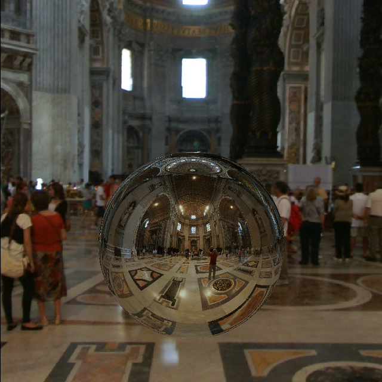

Ray Tracer
CS184 Graphics
This was built for project 2 in CS184 at UC Berkeley. However, a lot of features where implemented just for fun so don't expect to find them there! Built using: C++
Intro
So what is ray tracing? Ray tracing, in a nutshell, is a recursive technique used to color an image and make pretty pictures. The basic algorithm goes like this: for every pixel, shoot out an "eye ray" and let it bounce around your virtual scene- once the eye ray is done bouncing, color the pixel according to the colors the eye ray picks up along the way. If that doesn't make sense, think of the eye ray as a snowball. For every pixel, you throw a snowball. This is a elastic snowball so it'll bounce around the scene- whenever it hits something the snowball gets slightly stained by the objects color. For example, if the snowball hits a red object and then a blue object- it should be colored magenta. Once the snowball finishes bouncing- that's the color I decide to color my pixel. This is a really rough analogy- there are many caveats but many simplifications were made for explanation purposes. You might notice that this is actually "backwards" to how real life works:
- In real life, light strikes an object and bounces around a scene until it reaches your eye.
- In ray tracing, your eye sends out a pretend ray and it bounces around until it reaches a light source.
What I did
The project specs only demanded that ray tracing, linear transformations, and reflections be implemented. Since this project was so fun I (along with my partner) ended implementing anti-aliasing, refraction, environment mapping, and depth of field. Samples of those can be seen below.
Reflective Sphere, Environment Map, No Anti-Aliasing
Reflective Sphere, Environment Map, 3x3 Anti-Aliasing